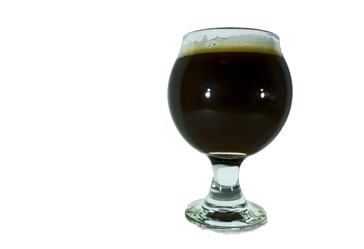

First Fruits | ABV 6.5 IBU 18
This Milkshake IPA has lacto sugar added to the boil and is
fermented on mango and pineapple. It's heavily dry hoped with Mosaic
and Eldorado hops. Expect a small fruit presence with some tropical
hop flavors with a tinyyyyy bit of citrus. Our first beer, and your
new favorite IPA. (probably)
The Salt and the Light Gose
The Salt and the Light Gose | ABV 4.5 IBU 4
Tart, bright and refreshing as hell! (or...heaven, I mean.) This
super quaffable Gose is lightly salted with some notes of coriander
and a massive amount of strawberry and rhubarab added to the
fermenter. Think grandma's strawberry rhubarab pie...mmmm. Light
pink in color, expect a notable tartness.
Through a Glass Dimly NEIPA
Through a Glass Dimly NEIPA | ABV 6.5 IBU 20
Hops, hops, and more hops! This juicy IPA boasts 5lbs of hops per
barrel! With Eldorado, Ekuanot, loral, and citra hops. Expect notes
of pineapple, guava, grapefruit, and lemon with a light but hazy
color. Heavy on the hops, chillax with the bitterness.

Rasberry Cheesecake Sour
Raspberry Cheesecake Sour
Bright, tart, and fruity. With aromas of fresh ripe raspberries, and
a vivid red color. We add lacto sugar for a silky smooth mouthfeel.
Added in some graham crackers to the mash for a hint of cheesecake
character. As well as 18lbs of raspberries per barrel! Dessert is
served.